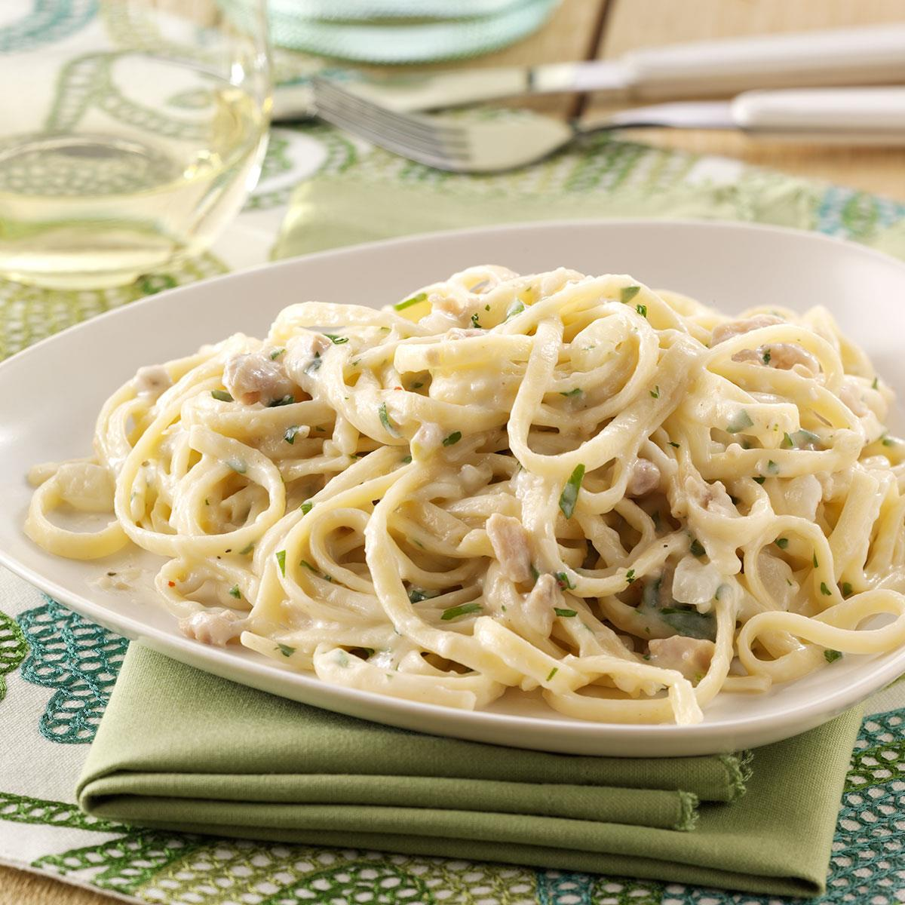

Linguine Clam with Cream

Description
This recipe doesn't live clam but you can if you choose to. This is a recipe I'm still working on to improve but it is pretty good for the time being. It doesn't cost very much but can take a bit of time to prep and make.
Ingredients
- Fresh or dry linguine pasta
- Canned clam
- Heavy whipping cream
- Parmigiano Reggiano cheese
- White wine
- Fresh Parsley
- Garlic
Directions
- Prepare Ingredients
- Chop garlic
- Chop the parsley
- Open the canned clam and separate the juice from the meat
- Grate the parmigiano reggiano cheese
- Cook the pasta in boiling water.
- Cook the clam meat in a pan/skillet.
- Add the garlic to the pan/skillet.
- Add white wine to the pan/skillet.
- Add the clam juice to the pan/skillet.
- Add the heavy whipping cream to the pan/skillet.
- Add the grated parmigiano reggiano cheese to the pan/skillet.
- Once the pasta has cooked, add pasta directly from the pot to the pan/skillet.
- Add more cheese if neccessary.
- Once the pasta has finished cooking, add the parsley.